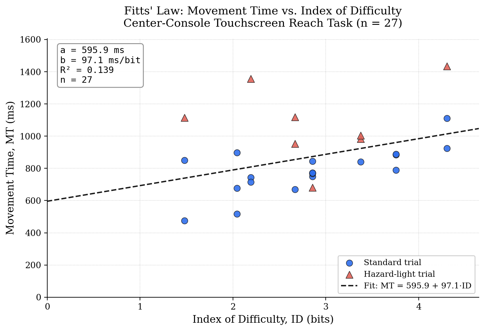

A driver keeps their hand resting on the steering wheel and their eyes on the road. Periodically they must reach to a center-console touchscreen to tap a climate or media control — the amber Home button represents the wheel-rest position, the teal Target represents the console button. In-car touchscreens replaced many physical buttons over the last decade, but the tradeoffs of button size and reach distance for a driver who cannot look down are not always obvious. This experiment measures that tradeoff directly using Fitts' Law: by systematically varying target distance (A) and width (W) and measuring Movement Time (MT), the experiment quantifies how much harder a small, far button is to hit than a large, close one — and where the safety cost of shrinking console buttons starts to add up.
A plain point-and-click test misses the fact that driving is a divided-attention task, not a clean pointing task. So on a random subset of trials (8 of 27 in this session), a road-hazard light flashed at the top of the screen mid-reach, requiring a Spacebar tap within 700 ms without abandoning the reach — modeling a driver who also has to react to traffic while touching the console. This was chosen because it's the single biggest difference between a lab pointing task and a real driving task, and, as the results below show, it turned out to matter a great deal.
The experiment is a single-file, zero-dependency web app (index.html in this repo).
It varied target Amplitude (250 / 500 / 750 px) and Width (40 / 80 / 140 px) across all
9 combinations, 3 repetitions each (27 trials, randomized order), timed each reach with
performance.now(), and exported the raw data as CSV.

Raw trial data: fitts_law_data.csv
Fitting a line to Movement Time against Index of Difficulty across all 27 trials gives:
The slope is positive as Fitts' Law predicts — harder targets took longer to hit — but the fit is weak (R² = 0.139) compared to typical clean single-task Fitts studies, which usually land above 0.9. The reason becomes clear when the 8 hazard-light trials are separated from the 19 standard trials:
| Subset | n | Mean MT | Fitted equation | R² |
|---|---|---|---|---|
| Standard trials | 19 | 783 ms | MT = 464.1 + 113.0·ID | 0.468 |
| Hazard trials | 8 | 1080 ms | — | 0.022 |
Trials with a concurrent hazard response were on average 38% slower (1080 ms vs. 783 ms) than standard trials at the same conditions, and that penalty was fairly flat across ID rather than scaling with it — which is exactly what a fixed dual-task cost added on top of a pointing movement should look like. Isolating the standard trials alone raises R² to 0.468, closer to what a single-task Fitts test typically produces, which suggests the weak overall fit is coming from the hazard-task noise rather than from a fundamentally unreliable relationship between amplitude/width and movement time. Subjectively, I also noticed myself moving a bit more cautiously through the session in general — not just on hazard trials — likely anticipating a possible hazard flash and holding back slightly rather than committing to a fully ballistic reach, which would add variance beyond the dual-task trials themselves and is a plausible further contributor to the modest overall R².
The hazard response itself was handled well: 7 of 8 hazard lights were caught within the 700 ms window (87.5% response rate), with a single miss at trial 16. That trial (A=500, W=80) still logged one of the faster movement times in the session (680 ms) — consistent with the light being missed because attention stayed on the reach rather than because the reach itself was rushed.
Taken together, the data support the scenario's core premise: Fitts' Law still governs the underlying pointing movement, but a concurrent attention demand — exactly the kind a driver faces — adds a time cost on top of it that a distance/width model alone does not capture, and can itself come at the expense of missing the very thing (the hazard) the driver was supposed to notice.